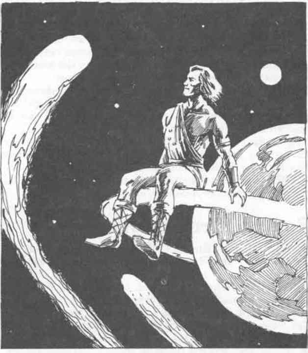

塞莱斯蒂安 · Celestian
 |
|
据说塞莱斯蒂安和法兰恩是兄弟，他们走上了相似却不同的道路。法兰恩游历世界时，塞莱斯蒂安则被无尽的群星与星界所吸引。塞莱斯蒂安，星辰漫游者，在弗兰尼斯只有少数信徒；天文学家、占星家、航海家、哲学家、梦想家，以及其他从事宇宙或天空研究的人都崇敬他。塞莱斯蒂安的圣坛位于乡野，远离城市灯光，建在山峰或丘顶，能清楚看见夜空。献给塞莱斯蒂安的仪式在星空下露天举行。
塞莱斯蒂安的化身
| 项目 | 数据 |
|---|---|
| 生命骰 HD | 23 |
| 命中 AC 0 所需值 THAC0 | 5 |
| 施法能力 SpA | MU 13 |
| 移动率 MV | 18" |
| 护甲等级 AC | -5 |
| 生命值 hp | 104 |
| 攻击次数 #AT | 2 |
| 伤害 Dmg | 依武器 +6 |
| 魔法抗性 MR | 45% |
| 体型 SZ | M |
| 力量 Str | 18（00） |
| 智力 Int | 18 |
| 感知 Wis | 16 |
| 敏捷 Dex | 18 |
| 体质 Con | 18 |
| 魅力 Cha | 17 |
塞莱斯蒂安以一名高大、瘦削、约中年男子的形象出现，身穿黑色服装。他的象征是一组由七颗“星”组成的排列（钻石、紫水晶、蓝宝石、祖母绿、黄玉、风信子石和红宝石），闪耀着遥远太阳的火焰。这个象征始终是他装束的一部分，或作为饰物佩戴，或织入衣物。他的皮肤光滑如黑檀，眼睛看不见瞳孔。他动作迅速而安静。他很少说话，即使开口，也只是用冰冷、非尘世的低语；尽管声音轻柔，却能传得很远。
他每轮可以使用任何涉及移动或旅行的魔法，效果如同 18 级施法者。塞莱斯蒂安施展这些法术时，不会消耗其他已记忆的法术。每次施法都只需 1 段，无论该法术正常的施法时间是多少。
塞莱斯蒂安通常携带下列武器中的一种或多种：一把带有 20 支 +3 箭的魔法长弓 +3；一支通常长 5 尺、但塞莱斯蒂安愿意时可伸长至 10 尺的长矛 +4；一把短剑 +5；一把可以投掷至 40 尺远的战斧 +4；以及一把由不可破坏金属制成的匕首 +6。
塞莱斯蒂安还拥有以下能力，可随意使用，每天一次：
极光 Aurora：使用此能力时，一道固定不动、七尺高、由闪烁光线组成的中空圆柱会包围塞莱斯蒂安，或包围他在 20 码范围内选择的任何生物。圆柱半径可由塞莱斯蒂安决定，为 1 至 7 尺。光线最多持续 7 轮；塞莱斯蒂安可以随时解除它。
塞莱斯蒂安及其牧师免疫圆柱的效果，但其他接触或被光线触及的生物会受到 3d8 点伤害（对法术豁免则伤害减半）。如果生物豁免失败，就不能离开极光区域的范围。试图进入该区域的生物也必须进行豁免。圆柱会抵消魔法抗性的效果。
彗星 Comet：这是一枚会燃烧的投射物，可以无误地击中 20 码内的一个目标。投射物点燃它接触到的任何可燃物。它的有毒燃烧气体对击中的任何东西造成 5d6 点伤害（对法术豁免则伤害减半）。目标必须始终处于施法者视线内，法术才能生效。即使拥有火焰抗性的生物也会承受彗星伤害的完整效果；不过，塞莱斯蒂安及其牧师免疫此法术的效果。
热闪电 Heat Lightning：此法术从天空召下一道闪电。闪电会无误地击中施法者 70 尺内的任意单一目标，造成 5d10 点伤害（对法术豁免则伤害减半）。目标必须始终处于施法者视线内，法术才能生效。即使拥有电击抗性的生物也会承受闪电伤害的完整效果；塞莱斯蒂安及其牧师免疫闪电的力量。
流星 Meteors：7 至 16（1d10+6）个直径 6 英寸的石球从塞莱斯蒂安手中射出。它们可以全部指向 20 码内的一个目标，也可以分散攻击多个目标。每颗流星造成 1d10+4 点伤害（对法术豁免则该颗流星的伤害无效，每颗命中的流星分别进行一次豁免）。流星可以逐颗释放，也可以同时释放，但两回合过去前尚未释放的流星都会消失。
太空寒冷 Space Chill：一道宽 40 尺、长 70 尺的寒冷与真空波从塞莱斯蒂安的双手发出，杀死它触及的一切植物。其他生物受到 4d10 点伤害。对法术豁免可以将总伤害减半。
星光 Star Shine：一道炽白光幕从塞莱斯蒂安的双眼射出，笼罩 70 尺内最多 4 个生物。目标会失明 1 轮（对法术豁免则效果无效）。失明可以通过治愈失明术（cure blindness）或成功施展解除魔法来消除。
雷鸣 Thunder：一声巨大、滚动的雷鸣直接在塞莱斯蒂安头顶响起。30 尺内、生命骰少于 20 的所有生物（塞莱斯蒂安及其牧师除外）都会被震慑 1 轮，并耳聋 1d4+1 轮，不得豁免。30 至 70 尺之间的生物只会耳聋（对法术豁免则效果无效）。
塞莱斯蒂安（或施法的牧师）必须处在露天之下，才能使用上述任意能力。施法时间为瞬发。凡适用豁免检定，均以 -3 调整。
塞莱斯蒂安的牧师
| 项目 | 数据 |
|---|---|
| 阵营 AL | 任意善良 |
| 法衣 RA | 布满星辰的黑袍 |
| 额外经验消耗 AEx | +10% |
| 武器 WPN | 长矛*、短剑、法杖 |
| 法术领域 SPH | 星界、创造、太阳、死灵（次要）、治疗、守护（次要） |
| 特殊能力 SPL | 见下文 |
| 额外法术 ADD | 流星、造水术、耐受寒冷／炎热、抵抗寒冷、抵抗火焰、火焰行走、创造食物与水、任务术、萨斯塔尔战车、风行术 |
塞莱斯蒂安的牧师会在一切可能的时候通过在太空深处旅行来模仿自己的神祇。他们往往超然离群，比起奥斯的事务更关心群星。所有塞莱斯蒂安牧师都会研究星辰，并具备实用的天文学与航海知识。牧师随着等级提升获得特殊法术：
| 等级 | 法术 |
|---|---|
| 1–2 | 羽落术 feather fall |
| 3–4 | 跳跃术 jump |
| 5–6 | 浮空术 levitate |
| 7–8 | 攀蛛术 spider climb |
| 9–10 | 飞行术 fly |
| 11–15 | 任意门 dimension door |
| 16 及以上 | 传送术 teleport |
牧师达到列出的经验等级后，会立即获得相应特殊法术。特殊法术可以累积，因此 16 级牧师每天拥有 7 个特殊法术。每个法术每天可以使用一次。施法时间按正常值计算，牧师以自己的经验等级施展这些法术。
这些法术像所有牧师法术一样由神祇赐予，牧师不必像魔法师那样学习它们。
额外法术
流星 Meteors（塑能术）
此法术创造 2–5（1d4+1）个直径 6 英寸的石球。它们从施法者手中射出，沿直线飞向施法者选择的一个或多个目标。除非目标成功进行对法术豁免，流星必定击中目标（敏捷和种族加值不适用）；若射程为 10 码或更近，豁免受到 -2 处罚。每颗命中的流星造成 1d4+4 点伤害。施法者可以逐颗或同时释放流星，但法术持续时间结束时仍未释放的流星都会消失。材料成分是塞莱斯蒂安的星辰圆环象征，施法牧师必须处在露天之下才能施展此法术。